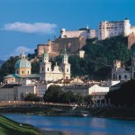
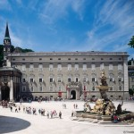
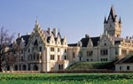

Viaggi ai Mercatini di Natale di Salisburgo
Anche la citta di Mozart è una delle maggiori mete per gli amanti dei Mercatini dell’Avvento: scoprila con un bellissimo viaggio ai Mercatini di Natale a Salisburgo che si anima di stand culinari e di oggettistica di vario tipo durante il periodo natalizio. Parti con questo bellissimo viaggio ai Mercatini di Salisburgo
Scheda Viaggio ai Mercatini di Natale a Salisburgo
COS'E' INCLUSO
- Viaggio A/R con pullman GT;
- 1 Pernottamento in Hotel 3*;
- 1 Prima Colazione;
- Visita Mercatini di Natale Salisburgo;
- Accompagnatore durante il viaggio;
- Trasferimenti come da programma;
- Assicurazione RC;
- Materiale informativo;
- Assistenza 24h;
IN REGALO PER OGNI PRENOTAZIONE
1 Voucher Omaggio per 1 persona per la SPA Il Regno di Dioniso (valido 3 mesi)
Programma Viaggio ai Mercatini di Natale a Salisburgo
Mercatini di Natale Salisburgo - Giorno 1
- Ritrovo nei luoghi stabiliti e partenza come da città e luoghi di carico pubblicati;
- Viaggio e pernottamento in pullman;
Mercatini di Natale Salisburgo - Giorno 2
- Arrivo a Salisburgo, città austriaca conosciuta nel mondo per essere stata la città che ha dato i natali al genio della musica Mozart, in mattinata;
- Sistemazione in hotel 3 Stelle o superiore (check-in ore 14.00);
- Tempo libero durante il soggiorno per visitare liberamente la città, assaggiare i suoi dolci caratteristici come le famose "Palle di Mozart" o la "Salzburger Nockerln", e per visitare i suoi magnifici Mercatini di Natale che durante il periodo di Avvento la ricoprono con una calda atmosfera capace di illuminare le sue vie e le sue piazze a festa e di far percepire la magia del Natale nell'aria.
Mercatini di Natale Salisburgo - Giorno 3
- Prima colazione in hotel;
- Tempo a disposizione per continuare a visitare la città, dichiarata Patrimonio dell'Umanità dell'UNESCO, e i suoi monumenti o i luoghi più importanti come il Landestheater, la sua Fortezza o il Castello di Mirabell o per cercare un ultimo pensiero fra le bancarelle dei Mercatini di Salisburgo;
- Nel pomeriggio ritrovo e ripartenza per lItalia;
- Arrivo a destinazione in serata;
BUS
Scegli il Mercatino di Natale che più fa per TE!
Viaggi ai Mercatini di Natale
- Viaggio A/R con pullman GT;
- 1 Pernottamento in Hotel 3*;
- 1 Prima Colazione;
- Visita Mercatini di Natale Norimberga;
- Visita libera di Norimberga;
- Accompagnatore durante il viaggio;
- Trasferimenti come da programma;
- Assicurazione RC;
- Materiale informativo;
- Assistenza 24h;
IN REGALO PER OGNI PRENOTAZIONE
1 Voucher Omaggio per 1 persona per la SPA Il Regno di Dioniso (valido 3 mesi)
- Viaggio A/R con pullman GT;
- Visita Mercatini di Natale Montreux;
- Accompagnatore durante il viaggio;
- Trasferimenti come da programma;
- Assicurazione RC;
- Materiale informativo;
- Assistenza 24h;
IN REGALO PER OGNI PRENOTAZIONE
1 Voucher Omaggio per 1 persona per la SPA Il Regno di Dioniso (valido 3 mesi)
- Viaggio A/R con pullman GT;
- 1 Pernottamento in Hotel 3* o superiore;
- 1 Prima Colazione;
- 1 Cena Tipica;
- Visita ai Mercatini di Natale Bolzano;
- Buono sconto per bevanda calda;
- Visita ai Mercatini di Natale Bressanone;
- Visita ai Mercatini di Natale Trento;
- Visita ai Mercatini di Natale Merano;
- Visita museo ceramiche Thun;
- Accompagnatore durante il viaggio;
- Trasferimenti come da programma;
- Assicurazione RC;
- Materiale informativo;
- Assistenza 24h
IN REGALO PER OGNI PRENOTAZIONE
1 Voucher Omaggio per 1 persona per la SPA Il Regno di Dioniso (valido 3 mesi)
- Viaggio A/R con pullman GT;
- 1 Pernottamento in Hotel 3* o superiore;
- 1 Cena Tipica;
- 1 Prima Colazione;
- Viaggio sul Trenino Rosso, tratta completa Tirano-Saint Moritz;
- Guida sul trenino;
- Visita guidata di Tirano;
- Visita guidata di Saint Moritz;
- Visita di Livigno e ai suoi Mercatini di Natale*;
- Ingresso alle Terme di Bormio o di Pontresina;
- eBook: Guida Completa del Trenino Rosso (valore di 9,99�!);
- Accompagnatore durante il viaggio;
- Trasferimenti come da programma;
- Assicurazione RC;
- Materiale informativo;
IN REGALO PER OGNI PRENOTAZIONE
1 Voucher Omaggio per 1 persona per la SPA Il Regno di Dioniso (valido 3 mesi)
* ATTENZIONE: Nelle date del 23/11,24/11 e 25/12 i mercatini a Livigno non saranno presenti. Sar� possibile comunque effettuare lo shopping natalizio presso i negozi della cittadina.
- Viaggio A/R con pullman GT;
- Viaggio sul Trenino Rosso del Bernina da Tirano a Saint Moritz ;
- Guida a bordo del Trenino;
- Visita di Livigno e dei suoi Mercatini di Natale;
- eBook: Guida Completa del Trenino Rosso (valore di 9,99�!);
- Accompagnatore durante il viaggio;
- Trasferimenti come da programma;
- Assicurazione RC;
- Materiale informativo;
- Assistenza 24h;
IN REGALO PER OGNI PRENOTAZIONE
1 Voucher Omaggio per 1 persona per la SPA Il Regno di Dioniso (valido 3 mesi)
* ATTENZIONE: Nelle date del 23/11,24/11 e 25/12 i mercatini a Livigno non saranno presenti. Sar� possibile comunque effettuare lo shopping natalizio presso i negozi della cittadina.
- Viaggio A/R con pullman GT;
- Visita Mercatini di Natale Bolzano;
- Ingresso e visita al Thuniversum, la fabbrica museo della Thun;
- Buono Sconto per Bevanda calda;
- Accompagnatore durante il viaggio;
- Trasferimenti come da programma;
- Assicurazione RC;
- Materiale informativo;
- Assistenza 24h;
IN REGALO PER OGNI PRENOTAZIONE
1 Voucher Omaggio per 1 persona per la SPA Il Regno di Dioniso (valido 3 mesi)
- Viaggio A/R con pullman GT;
- Visita Mercatini di Natale Zurigo;
- Accompagnatore durante il viaggio;
- Trasferimenti come da programma;
- Assicurazione RC;
- Materiale informativo;
- Assistenza 24h;
IN REGALO PER OGNI PRENOTAZIONE
1 Voucher Omaggio per 1 persona per la SPA Il Regno di Dioniso (valido 3 mesi)
- Viaggio A/R con pullman GT;
- 2 Pernottamenti in Hotel 3*;
- 2 Prime Colazioni;
- Visita Mercatini di Natale Praga;
- Accompagnatore durante il viaggio;
- Trasferimenti come da programma;
- Assicurazione RC;
- Materiale informativo;
- Assistenza 24h;
IN REGALO PER OGNI PRENOTAZIONE
1 Voucher Omaggio per 1 persona per la SPA Il Regno di Dioniso (valido 3 mesi)
- Viaggio A/R con pullman GT;
- 3 Pernottamenti in Hotel 3*;
- 3 Prime Colazioni;
- Visita Mercatini di Natale Praga;
- Accompagnatore durante il viaggio;
- Trasferimenti come da programma;
- Assicurazione RC;
- Materiale informativo;
- Assistenza 24h;
IN REGALO PER OGNI PRENOTAZIONE
1 Voucher Omaggio per 1 persona per la SPA Il Regno di Dioniso (valido 3 mesi)
- Viaggio A/R con pullman GT;
- 2 Pernottamenti in Hotel 3*;
- 2 Prime Colazioni;
- Visita Mercatini di Natale Vienna;
- Accompagnatore durante il viaggio;
- Trasferimenti come da programma;
- Assicurazione RC;
- Materiale informativo;
- Assistenza 24h;
IN REGALO PER OGNI PRENOTAZIONE
1 Voucher Omaggio per 1 persona per la SPA Il Regno di Dioniso (valido 3 mesi)
- Viaggio A/R con pullman GT;
- 3 Pernottamenti in Hotel 3*;
- 3 Prime Colazioni;
- Visita Mercatini di Natale Vienna;
- Accompagnatore durante il viaggio;
- Trasferimenti come da programma;
- Assicurazione RC;
- Materiale informativo;
- Assistenza 24h;
IN REGALO PER OGNI PRENOTAZIONE
1 Voucher Omaggio per 1 persona per la SPA Il Regno di Dioniso (valido 3 mesi)
- Viaggio A/R con pullman GT;
- 1 Pernottamento in Hotel 3*;
- 1 Prima Colazione;
- Visita Mercatini di Natale a Stoccarda;
- Visita alle Cascate del Reno;
- Accompagnatore durante il viaggio;
- Trasferimenti come da programma;
- Assicurazione RC;
- Materiale informativo;
- Assistenza 24h;
IN REGALO PER OGNI PRENOTAZIONE
1 Voucher Omaggio per 1 persona per la SPA Il Regno di Dioniso (valido 3 mesi)
- Viaggio A/R con pullman GT;
- 1 Pernottamento in Hotel 3* nella Foresta Nera;
- Cena inclusa in hotel;
- 1 Prima Colazione;
- Visita Mercatini di Natale Strasburgo;
- Visita Mercatini di Natale Friburgo;
- Accompagnatore durante il viaggio;
- Trasferimenti come da programma;
- Assicurazione RC;
- Materiale informativo;
- Assistenza 24h;
IN REGALO PER OGNI PRENOTAZIONE
1 Voucher Omaggio per 1 persona per la SPA Il Regno di Dioniso (valido 3 mesi)
- Viaggio A/R con pullman GT;
- Visita Mercatini di Natale Merano;
- Visita al Thuniversum;
- Accompagnatore durante il viaggio;
- Trasferimenti come da programma;
- Assicurazione RC;
- Materiale informativo;
- Assistenza 24h;
IN REGALO PER OGNI PRENOTAZIONE
1 Voucher Omaggio per 1 persona per la SPA Il Regno di Dioniso (valido 3 mesi)
- Viaggio A/R con pullman GT;
- 1 Pernottamento in Hotel 3*;
- 1 Prima Colazione;
- Cena in hotel;
- Bevande ai pasti;
- Visita Mercatini di Natale Innsbruck;
- Accompagnatore durante il viaggio;
- Trasferimenti come da programma;
- Assicurazione RC;
- Materiale informativo;
- Assistenza 24h;
IN REGALO PER OGNI PRENOTAZIONE
1 Voucher Omaggio per 1 persona per la SPA Il Regno di Dioniso (valido 3 mesi)
- Viaggio A/R con pullman GT;
- Pernottamento in hotel 3 stelle o superiore;
- Colazione in hotel;
- Visita e ingresso al Castello di Linderhof;
- Visita ai Mercatini di Natale di Monaco;
- Cena presso la mitica birreria Augustiner;
- Visita e ingresso al Castello di Nymphenburg e dei suoi meravigliosi giardini;
- Pranzo al monastero benedettino di Andechs;
- Visita e ingresso al castello di Neuschwanstein;
- Accompagnatore durante il viaggio;
- Trasferimenti come da programma;
- Assistenza durante il soggiorno;
- Materiale informativo;
- Versione lite dell'E-Book "guida di Monaco"
- Assicurazione RC;
IN REGALO PER OGNI PRENOTAZIONE
1 Voucher Omaggio per 1 persona per la SPA Il Regno di Dioniso (valido 3 mesi)
- Viaggio A/R con pullman GT;
- 1 Pernottamento in Hotel 3*;
- 1 Prima Colazione;
- Visita Mercatini di Natale Salisburgo;
- Accompagnatore durante il viaggio;
- Trasferimenti come da programma;
- Assicurazione RC;
- Materiale informativo;
- Assistenza 24h;
IN REGALO PER OGNI PRENOTAZIONE
1 Voucher Omaggio per 1 persona per la SPA Il Regno di Dioniso (valido 3 mesi)
- Viaggio A/R con pullman GT;
- 2 Pernottamenti in Hotel 3*;
- 2 Prime Colazioni;
- Visita Mercatini di Natale di Parigi;
- Accompagnatore durante il viaggio;
- Trasferimenti come da programma;
- Assicurazione RC;
- Materiale informativo;
- Assistenza 24h;
IN REGALO PER OGNI PRENOTAZIONE
1 Voucher Omaggio per 1 persona per la SPA Il Regno di Dioniso (valido 3 mesi)
- Viaggio A/R con pullman GT;
- 3 Pernottamenti in Hotel 3*;
- 3 Prime Colazioni;
- Visita Mercatini di Natale di Parigi;
- Accompagnatore durante il viaggio;
- Trasferimenti come da programma;
- Assicurazione RC;
- Materiale informativo;
- Assistenza 24h;
IN REGALO PER OGNI PRENOTAZIONE
1 Voucher Omaggio per 1 persona per la SPA Il Regno di Dioniso (valido 3 mesi)
- Viaggio A/R con pullman GT;
- 1 Pernottamento in Hotel 3*;
- Cena in hotel;
- Bevande ai pasti;
- 1 Prima Colazione;
- Visita Mercatini di Natale Innsbruck;
- Visita libera dell'isola Herreinsel;
- Visita libera dell'isola Fraueninsel;
- Visita Mercatini di Natale dell'isola delle Dame;
- Mini Crociera sul Lago Chiemsee;
- Accompagnatore durante il viaggio;
- Trasferimenti come da programma;
- Assicurazione RC;
- Materiale informativo;
- Assistenza 24h;
IN REGALO PER OGNI PRENOTAZIONE
1 Voucher Omaggio per 1 persona per la SPA Il Regno di Dioniso (valido 3 mesi)
- Viaggio in bus GT
- 2 pernottamenti in hotel 3* o superiore lungo la Strada Romantica Tedesca
- 2 colazioni in hotel
- 2 cene in hotel
- Bevande incluse
- Ingresso e visita al castello di Neuschwanstein
- Visita dei Mercatini di Natale di Fussen
- Visita dei Mercatini di Natale di Rothenburg
- Visita dei Mercatini di Natale di N�rdlingen
- Visita dei Mercatini di Natale di Augusta
- Accompagnatore durante il viaggio
- Assistenza durante il soggiorno
- Spostamenti come da programma
- Assicurazione RC
- Materiale Informativo
- Versione lite dell'E-Book "Guida di F�ssen" del valore di 7,99�;
- Versione lite dell'E-Book "Guida di Augusta" del valore di 7,99�;
- Versione lite dell'E-Book "Guida della Strada Romantica" del valore di 9,99�;
- Versione lite dell'E-Book "Guida di Rothenburg" del valore di 7,99�;
- Versione lite dell'E-Book "Alla scoperta del Castello di Neuschwanstein" del valore di 9,99�
- Versione lite dell'E-Book "Alla scoperta del Castello di Hohenschwangau" del valore di 9,99�
IN REGALO PER OGNI PRENOTAZIONE
1 Voucher Omaggio per 1 persona per la SPA Il Regno di Dioniso (valido 3 mesi)
- Viaggio A/R con pullman GT;
- 2 Pernottamenti in Hotel 3* o superiore ad Amburgo o Lubecca;
- 2 Prime Colazioni;
- 2 Cene in hotel;
- Bevande ai pasti;
- Visita Mercatini di Natale Amburgo;
- Visita Mercatini di Natale Lubecca;
- Accompagnatore durante il viaggio;
- Trasferimenti come da programma;
- Assicurazione RC;
- Materiale informativo;
- Assistenza 24h;
IN REGALO PER OGNI PRENOTAZIONE
1 Voucher Omaggio per 1 persona per la SPA Il Regno di Dioniso (valido 3 mesi)
- Viaggio A/R con pullman GT;
- Visita guidata di Napoli;
- Visita ai Mercatini di Natale di Napoli e alla bellissima San Gregorio Armeno;
- 3 Pernottamenti in Hotel 4*;
- 3 Cene in hotel;
- 2 pranzi in ristorante;
- Bevande incluse;
- 3 colazioni in hotel;
- Visita di Orvieto;
- Visita di Sorrento;
- Pranzo a Sorrento;
- Visita di Amalfi;
- Visita di Montecassino;
- Visita della Costiera;
- Altre visite come da programma;
- eBook lite:"Guida della Costiera Amalfitana"
- Accompagnatore durante il viaggio;
- Trasferimenti come da programma;
- Assistenza durante il soggiorno;
- Assicurazione RC;
IN REGALO PER OGNI PRENOTAZIONE
1 Voucher Omaggio per 1 persona per la SPA Il Regno di Dioniso (valido 3 mesi)
- Viaggio A/R con pullman GranTurismo;
- Pernottamento in Hotel 3* o superiore;
- Colazione in hotel;
- Cena in Hotel;
- Bevande incluse ai pasti;
- Visita guidata di Innsbruck;
- Visita dei mercatini di Natale di Innsbruck;
- Trasferimento, biglietto d'Ingresso e visita del "mondo di cristallo", il museo Swarovski;
- Visita di Bolzano e dei suoi mercatini;
- Visita di Bressanone e dei suoi mercatini;
- Trasferimento, Ingresso e visita al Thuniversum, la famosa fabbrica delle ceramiche Thun;
- E-Book sul Tirolo del valore di 9,99�;
- Assicurazione R/C;
- Accompagnatore per tutto il viaggio;
- Assistenza Club Magellano in loco per tutto il soggiorno;
- Trasferimenti come da programma;
IN REGALO PER OGNI PRENOTAZIONE
1 Voucher Omaggio per 1 persona per la SPA Il Regno di Dioniso (valido 3 mesi)
- Viaggio A/R con pullman GT;
- Visita Mercatini di Natale del lago di Braies;
- Visita Mercatini di Natale di San Candido;
- Visita Mercatini di Natale di Brunico;
- Pernottamento in Hotel;
- Cena in Hotel;
- Colazione in hotel;
- Visita al museo aziendale e al factory shop presso lo stabilimento Loacker di Heinfels;
- Accompagnatore durante il viaggio;
- Trasferimenti come da programma;
- Assicurazione RC;
- Materiale informativo;
- Assistenza 24h;
IN REGALO PER OGNI PRENOTAZIONE
1 Voucher Omaggio per 1 persona per la SPA Il Regno di Dioniso (valido 3 mesi)
- Viaggio A/R con pullman GT;
- Visita guidata di Locarno e della Piazza Grande;
- Tempo libero a disposizione;
- Viaggio sul Trenino delle Centovalli da Locarno a Santa Maria Maggiore A/R;
- Visita libera di Santa Maria Maggiore e dei suoi mercatini di Natale;
- Accompagnatore durante il viaggio;
- Assistenza 24h durante il soggiorno;
- Trasferimenti come da programma;
- Assicurazione RC;
- Materiale informativo
NB La guida e le visite guidate sono effettuate in lingua Italiana.
IN REGALO PER OGNI PRENOTAZIONE
1 Voucher Omaggio per 1 persona per la SPA Il Regno di Dioniso (valido 3 mesi)
- Viaggio A/R con pullman GT;
- Pernottamento in hotel 3 stelle o superiore
- Colazione in hotel
- Cena
- Visita guidata del centro storico di Urbino;
- Visita guidata del centro storico di San Marino;
- Tempo libero a disposizione per i mercatini di Natale di San Marino;
- Visita guidata di Candelara;
- Tempo libero per la visita dei mercatini di Natale di Candelara;
- Visita guidata di Sant'Agata Feltria;
- Tempo libero per la visita dei mercatini di Sant'Agata Feltria;
- Accompagnatore durante il viaggio;
- Assistenza 24h durante il soggiorno;
- Trasferimenti come da programma;
- Assicurazione RC;
- Materiale informativo
NB La guida e le visite guidate sono effettuate in lingua Italiana.
IN REGALO PER OGNI PRENOTAZIONE
1 Voucher Omaggio per 1 persona per la SPA Il Regno di Dioniso (valido 3 mesi)
- Viaggio A/R con pullman GT;
- Visita mercatini di Natale del lago di Bled;
- Visita mercatini di Natale di Lubiana;
- Pernottamento in Hotel con Casin� interno;
- Ingresso gratuito al Casin� interno all'hotel, (Casin� Kongo);
- Fiches omaggio al Casin� interno;
- Welcome drink;
- Colazione in hotel;
- Cena in hotel;
- Accompagnatore durante il viaggio;
- Trasferimenti come da programma;
- Assicurazione RC;
- Materiale informativo;
- Assistenza 24h;
IN REGALO PER OGNI PRENOTAZIONE
1 Voucher Omaggio per 1 persona per la SPA Il Regno di Dioniso (valido 3 mesi)
- Viaggio A/R con pullman GT;
- Ingresso alla casa di Babbo Natale a Govone;
- Accompagnatore durante il viaggio;
- Assistenza 24 h durante il soggiorno;
- Trasferimenti come da programma;
- Assicurazione RC;
IN REGALO PER OGNI PRENOTAZIONE
1 Voucher Omaggio per 1 persona per la SPA Il Regno di Dioniso (valido 3 mesi)
- Viaggio A/R con pullman GT;
- Accompagnatore durante il viaggio;
- Assistenza 24 h durante il soggiorno;
- Trasferimenti come da programma;
- Assicurazione RC;
IN REGALO PER OGNI PRENOTAZIONE
1 Voucher Omaggio per 1 persona per la SPA Il Regno di Dioniso (valido 3 mesi)
- Viaggio in bus GT
- 1 pernottamento in hotel 3* o superiore lungo la Strada Romantica Tedesca
- colazione in hotel
- cena in hotel
- Bevande incluse
- Ticket ingresso e visita guidata al castello di Neuschwanstein
- Visita dei Mercatini di Natale di Fussen
- Visita dei Mercatini di Natale di Landsberg am Lech
- Visita dei Mercatini di Natale di Augusta
- Visita della Wieskirche
- Accompagnatore durante il viaggio
- Assistenza durante il soggiorno
- Spostamenti come da programma
- Assicurazione RC
- Materiale Informativo
- Versione lite dell'E-Book "Guida di F�ssen" del valore di 7,99�;
- Versione lite dell'E-Book "Guida di Augusta" del valore di 7,99�;
- Versione lite dell'E-Book "Guida della Strada Romantica" del valore di 9,99�;
- Versione lite dell'E-Book "Alla scoperta del Castello di Neuschwanstein" del valore di 9,99�
IN REGALO PER OGNI PRENOTAZIONE
1 Voucher Omaggio per 1 persona per la SPA Il Regno di Dioniso (valido 3 mesi)
- Viaggio A/R con pullman GT;
- Visita ai Mercatini di Natale di Lucerna;
- Accompagnatore durante il viaggio;
- Trasferimenti come da programma;
- Assicurazione RC;
- Materiale informativo;
- Assistenza 24h;
- Viaggio A/R con pullman GT;
- Pernottamento in hotel 3 stelle o superiore
- Cena inclusa in hotel;
- 1 Prima Colazione;
- Visita Mercatini di Lucerna;
- Visita Mercatini di Natale di Costanza;
- Accompagnatore durante il viaggio;
- Trasferimenti come da programma;
- Assicurazione RC;
- Materiale informativo;
- Assistenza 24h;
- Viaggio A/R con pullman GT;
- Accompagnatore durante tutta la durata del viaggio;
- Visita libera di Berna e dei suoi mercatini di Natale;
- Crociera in battello sul lago di Thun da Spiez a Thun;
- Visita libera di Thun;
- Assicurazione RC;
- Materiale Informativo;
- Trasferimenti come da Programma;
Città di Partenza Viaggio ai Mercatini di Natale a Salisburgo
- Agrate159€
- Alessandria174€
- Arezzo199€
- Asti179€
- Bergamo159€
- Bologna189€
- Bolzano159€
- Brescia159€
- Busalla189€
- Como159€
- Firenze195€
- Genova189€
- Grumello159€
- Melegnano164€
- Milano159€
- Modena189€
- Novara189€
- Parma189€
- Pavia174€
- Peschiera-del-Garda159€
- Piacenza189€
- Reggio-Emilia189€
- Roma219€
- Santhia189€
- Siena199€
- Terni219€
- Torino189€
- Tortona179€
- Trento159€
- Trezzo159€
- Verona159€
- Viterbo219€
Il Pacchetto non Comprende
- eventuale tassa di soggiorno (ca 1-2 euro)
- quanto non specificato nella sezione "nel prezzo è incluso".
Date e Orari Mercatini di Salisburgo
18.11.2017 – 24.12.2017
Mercatino di
Natale di Gesù Bambino
Piazza del Duomo & Piazza
della Residenza – centro storico
Da
Lunedì a Giovedì dalle 10.00 alle
20.30
Venerdì dalle 10.00 alle 21.00
Sabato, Giorni Festivi dalle 9.00 alle 21.00,
Domenica dalle 9.00 alle 20.30
24.12. dalle 9.00 alle 15.00
13.11.2017 – 24.12.2017
Mercatino di Natale di Piazza
Mirabell
Piazza Mirabell, Goethestraße
Lunedì,
Martedì, Mercoledì e Venerdì dalle 10.00 alle 20.00
Giovedì dalle 09.00 alle 20.00
Sabato
& Festivi dalle 10.00 alle 21.00
Domenica dalle 10 .00 alle 20.30
24.12. dalle 10.00 alle 15.00
13.11.2017 – 24.12.2017
Mercatino di
Natale del Castello di Hellbrunn
Cortile del Castello di Hellbrunn
Fino al 31.11. da Mercoledì a Venerdì dalle 13.00 alle 20.00
Dal 1.12. anche Lunedì &
Martedì dalle 13.00 alle 20.00
Sabato, Domenica
& Festivi dalle 10.00 alle 20.00
24.12.
dalle 10.00 alle 14.00
22.11.2017 – 14.12.2017
Mercatino di Natale della Fortezza di Hohensalzburg
Cortile della Fortezza di Hohensalzburg
Da Venerdì a Domenicadalle 10.00 alle 19.00
15.11.2017 – 14.12.2017
Mercatino di Natale
Sterngarten
Da Domenica a Venerdì dalle 11.00 alle 19.00
Sabato dalle 10.00 alle 19.00
22.11.2017 –
14.12.2017
Mercatino di Natale della Chiesa di St. Leonhard
Chiesa di St. Leonhard
Sabato dalle 14.00 alle 19.00
Domenica & 08.12. dalle 11.00 alle
19.00
04.12.2017- 08.12.2017
Mercatini di Natale
al Museo Barocco di Salisburgo
Salzburger Barockmuseum
– Mirabellgarten – Orangerie
29.11.2017 – 31.12.2017
Mercatino di Natale nel Mondo della Birra
Maxglaner –
Birreria Stiegl-Brauwelt
Tutti i giorni dalle 10.00 alle 17.00
30.11.2017 – 02.12.2017
Mercato dell’Avvento degli artisti ed
artigiani
Biblioteca dell’Università, Hofstallgasse 2
Venerdì dalle 14.00 alle 19.00
Sabato dalle 10.00 alle 19.00
Domenica dalle 10.00 alle 18.00
01.12.2017 – 02.12.2017
Mercatino di Natale della
Gwandhaus
23.11.2017 – 27.12.2017
Mercatino di Natale di
Altenmarkt – Zauchensee
Sabato & Domenica
17.11. – 20.11.2017 e
10.12.2017
Mercatini di Natale sul Wolfgangsee
St.
Gilgen, St. Wolfgang e Strobl
Sabato e domenica
24.12. – 31.12.2017
Mercatini di Capodanno sul Wolfgangsee
St. Gilgen, St. Wolfgang e Strobl
Tutti i giorni dalle 12.00 alle 18.00
16.11.2017 – 22.12.2017 e 06.12.2017
Mercatino di Natale di
Oberndorf,
Da Giovedì a Domenica
14.11.2017 – 20.12.2017
Mercatini di Zell am see (03.12.2017 concerto di
gala; 04.12.2017 canti d’Avvento)
Sabato &
Domenica
Storia di Salisburgo
Le origini
Fin dal Neolitico si documentano tracce
di insediamenti nell’area dell’odierna Salisburgo, che con buona probabilità
fu sede di un accampamento celtico. A partire dal 15 a.C. le piccole
comunità originarie confluirono in un unico centro abitato sulle rive dell’attuale
fiume Salzach, chiamato Juvavum, che nel 45 d.C. divenne municipium romano.
Durante il monachesimo, già dal V secolo, fu sede di comunità monacali importanti e
in segutio S. Ruperto ne fece un centro di evangelizzazione.
Il Medioevo
Il nome della città, Salzburg (castello
del sale), e quello del fiume, Salzach (via del sale), vennero assegnati per la
prima volta nel 755, ad indicare la vicinanza delle miniere di salgemma e la
principale attività della città, il commercio di sale appunto. Il 20 aprile del 798
Salisburgo venne nominata da Papa Leone III arcidiocesi, dietro richiesta del re dei
Franchi Carlo Magno, con compiti missionari nei confronti della vicina popolazione
degli Avari. Come provincia della Chiesa, comprendeva allora quasi tutto il
territorio della Baviera e gran parte dell’odierna Austria. La città ebbe un ruolo
molto rilevante durante la lotta per le investiture, soprattutto dopo l’inizio, nel
1077, della costruzione della Fortezza di Hohensalzburg da parte
dell’arcivescovo Gebhard von Helfenstein, fortificazione al centro di aspre contese
tra i prealiti che si qui si contendevano l’arcivescovato.
Tra XII e XIV secolo,
Salisburgo visse momenti difficili come l’incendio del 1166, che la distrusse quasi
completamente e che venne appiccato dai seguaci dell’imperatore Federico
Barbarossa, o come la Peste nera, che nel 1348 uccise
quasi un terzo della popolazione cittadina.
L’Età Moderna
Verso la fine del XIV secolo la
città si rese definitivamente indipendente dalla Baviera e tra XV e XVII secolo
visse un’esponenziale crescita ed un’eccezionale fioritura artistica. In
particolare, nei primi anni del Seicento venne trasformata in stile Barocco per
volere degli arcivescovi Wolf Dietrich von Raitenau, Markus Sittikus Conte di
Hohenems e Paris Conte di Lodron. Quest’ultimo tra l’altro, grazie alla sua politica
neutrale, riuscì a tenere Salisburgo fuori dalla Guerra dei Trent’anni.
Secolarizzato nel 1803, il Principato di Salisburgo venne inglobato
nell’Impero Austro-Ungarico, ma di lì a poco, nel 1850, il territorio tornò ad
essere indipendente dalla corona asburgica.
Il Novecento e la Contemporaneità
Dal 1918
Salisburgo divenne capoluogo dell’omonimo Stato Federato della Repubblica d’Austria.
La popolazione della regione votò nel 1921 contro l’Anschluss con la Germania,
provocando l’inizio degli anni più cupi della sua storia recente.
Il 13 marzo del 1938, in seguito alla scelta di Hitler di
annettere l’Austria al territorio tedesco, Salisburgo vide l’ingresso delle truppe
tedesche, a cui si susseguirono eventi disastrosi: un enorme rogo
di libri fu appiccato sulla Piazza della Residenza, molti cittadini ebrei ed
oppositori politici vennero arrestati e deportati, la Sinagoga venne distrutta e nel
1942, sia in città che a St. Johann, furono eretti alcuni Lager.
Nel corso della Seconda Guerra Mondiale, complessivamente
quindici bombardamenti aerei americani colpirono Salisburgo, danneggiando seriamente
anche alcuni monumenti del centro storico, come la cupola del Duomo e l’abitazione
di Mozart.
Il 4 maggio del 1945 ci fu l’ingresso delle
truppe americane nella città. Gli americani insediarono il sindaco
Richard Hildmann e crearono i partiti politici SP, VP e KP. Grazie agli aiuti
finanziari degli occupanti, in breve tempo Salisburgo vide una rapida ripresa
economica e sociale. I primi segnali si ebbero già l’11 agosto del 1945, quando si
tenne la prima rappresentazione del Festival di Salisburgo del
dopoguerra, e il 26 settembre dello stesso anno, durante la conferenza dei Länder
austriaci, in cui Salisburgo fu la prima Land a volere la ricostituzione della
Repubblica Austriaca ed il riconoscimento del governo di Renner a Vienna. Da allora,
Salisburgo è tornata a rifulgere della bellezza degli anni imperiali ed è una città
ricca e prospera, tuttora considerata una delle perle dell’Europa centrale.
Cosa vedere a Salisburgo
Salisburgo, in tedesco Salzburg, ovvero castello del sale, conta circa 150.000
abitanti, è situata nell’Austria centro-settentrionale, è capoluogo della
regione federale del Salisburghese e sorge sul fiume Salzach, in italiano via
del sale.
Dopo Vienna, è la città austriaca più visitata dai turisti di
tutto il mondo, amanti dell’arte e della cultura. E’ considerata centro
indiscusso della musica mondiale, nota in particolare come patria di Wolfgang
Amadeus Mozart, a cui tutto, dai monumenti, alle vie, ai cioccolatini, è
ispirato. Il legame della città con la musica è fortissimo, come dimostrano i
numerosi Conservatori esistenti e le molteplici manifestazioni concertistiche
che qui vengono organizzate, tra cui il celebre Festival Concertistico d’Estate
(Salzburger Festspiele).
Salisburgo è una città deliziosa e romantica, di
grande interesse storico e culturale, ricca di monumenti ed edifici antichi, che
costituiscono un importante tesoro architettonico. Non a caso, è soprannominata
la “Firenze del Nord” ed il suo centro storico è inserito nella lista del
Patrimonio dell’Umanità dell’UNESCO. Questa zona, che è la più antica della
città, si estende fra il Salzach e le colline ed è meravigliosamente affollata
da un pittoresco intreccio di strade, piazze con fontane, case antiche, cupole
ed edifici per lo più in stile Barocco. Ma tra le parti più belle di Salisburgo
ci sono senza dubbio i suoi punti panoramici, dai quali essa offre scorci così
suggestivi da essere difficilmente eguagliabili.
La Fortezza di Hohensalzburg (Festung Hohensalzburg)
Uno dei
punti più alti di Salisburgo è la Fortezza di Hohensalzburg (Alta Salisburgo),
che domina il centro storico e offre un meraviglioso belvedere, al quale dal
1892 si può accedere anche tramite funicolare. Attualmente,con una superficie
fortificata di 14.000 metri quadrati, è considerata la fortezza ancora intatta
più grande del centro Europa, una delle poche a non essere mai stata espugnata o
in qualche modo danneggiata.
Il castello iniziò ad essere costruito nel 1077
dall’arcivescovo Gebhard, il quale però nel 1085 fu costretto all’esilio,
lasciando così il progetto incompiuto. I suoi successori lo completarono e, fra
XV e XVI secolo, l’arcivescovo Leonard von Keutschach lo ampliò, dandogli
l’attuale sembiante. Dal 1120 l’edificio divenne residenza vescovile ma la sua
funzione mutò dalla fine dell’Ottocento quando, in luogo di fortezza difensiva,
il castello divenne caserma e prigione; oggi invece ospita al suo interno un
museo e varie manifestazioni durante tutto l’anno, ma soprattutto è uno dei
luoghi più amati per l’esecuzione di concerti da camera.
Il complesso della
Fortezza è costituito dal palazzo centrale in stile romanico, un tempo destinato
all’uso abitativo, detto Hoher Stock, da numerosi edifici annessi e da una
chiesa propria. Particolarmente degne di interesse sono le camere medievali del
principe e il Museo della Fortezza.
Informazioni utili
Dove: Fortezza di Hohensalzburg,
Mönchsberg 34
Quando: Da
Gennaio ad Aprile e da Ottobre a Dicembre dalle 9.30 alle 17.00
Maggio e
Giugno dalle 9.00 alle 18.00
Luglio e Agosto dalle 9.00 alle 19.00
Settembre dalle 9.00 alle 18.00
Da Ottobre a Dicembre dalle 9.30 alle
17.00
Pasqua e fine settimana dell’Avvento dalle 9.00 alle 18.00
Natale
dalle 9.30 alle 14.00
Il Duomo di Salisburgo
Il Duomo è
sicuramente il più importante edificio sacro di Salisburgo e ne è
contemporaneamente il centro spirituale. Attraverso la sua storia, si
ripercorrono anche alcune delle vicissitudini salienti della città.
Il Duomo
originario fu realizzato nel 774, ma questo primo edificio venne distrutto già
durante l’incendio del 1166, appiccato dai seguaci di Barbarossa, dopo il quale
ci vollero dieci anni perché si riaprissero i cantieri e Salisburgo potesse
avere una nuova cattedrale. Questa costruzione, che pare superasse in
magnificenza e grandezza tutte le altre cattedrali imperiali, venne ancora
danneggiata dalle fiamme nel 1598. L’allora arcivescovo Wolf approfittò
dell’incendio per radere al suolo la costruzione, senza risparmiarne gli arredi
e le opere d’arte in essa contenute, e dare l’avvio ad una nuova edificazione.
Quest’ultima però non vide mai la luce, almeno fin quando, tra 1614 e 1628, non
venne affidato un nuovo progetto all’architetto Santino Solari, che diede vita
alla prima cattedrale barocca a nord delle Alpi. Mentre la zona circostante
venne sistemata con l’apertura di quattro piazze ideate dallo Scamozzi, il Duomo
assunse la forma di una grande basilica, con un’imponente cupola formata da tre
absidi e una splendida facciata a due torri. Le pareti vennero interamente
riempite di decorazioni a fresco e a stucco ancora oggi ben conservate. Dopo la
seconda ricostruzione del 1628, il Duomo di Salisburgo fu nuovamente
danneggiato, questa volta da una bomba della Seconda Guerra Mondiale, che ne
distrusse la cupola e il presbiterio. I lavori di ricostruzione, terminati nel
1959, hanno restituito alla cattedrale il suo aspetto attuale, consacrandola per
l’ennesima volta a santuario prediletto della città.
Alcuni degli oggetti
più pregevoli del Duomo di Salisburgo sono il tesoro di epoca carolingia, le
magnifiche porte d’ingresso, lo splendido organo principale, circondato da
angioletti che suonano, e il fonte battesimale in cui fu battezzato lo stesso
Wolfgang Amadeus Mozart. Il celebre musicista, proprio in qualità di organista
del duomo e di primo violino, scrisse per Salisburgo numerose ed eterne
composizioni di musica sacra.
Il Palazzo della Residenza
Il Palazzo della Residenza,
affacciato sull’omonima piazza, fa parte degli edifici storici più importanti
del centro storico di Salisburgo, un tempo sede dei principi arcivescovi che
governavano Salisburgo. Da questo luogo, a partire dalla nascita del principato
ecclesiastico fino al passaggio di Salisburgo all’Impero Austriaco, sono state
decise le sorti politiche della città.
Le prime testimonianze
dell’arcivescovado nel Palazzo della Residenza risalgono addirittura al
Medioevo. Da allora, ogni principe ha messo mano alla sua struttura,
modificandola secondo il proprio gusto. Gli abbellimenti più rilevanti però sono
da attribuire agli arcivescovi più influenti sulla vita artistica della città:
Wolf Dietrich von Raitenau, che lo fece costruire nel XVI secolo e a cui si deve
lo stampo barocco dell’edificio, Paris Lodron e Franz Anton Harrach, i cui
stemmi sovrastano l’entrata di marmo della Residenza, situata sull’omonima
piazza cittadina.
Data la sua posizione e la sua magnificenza, il palazzo è
stato un’importante vetrina di rappresentanza durante tutta la storia imperiale
di Salisburgo. Qui venne accolto Napoleone III dall’Imperatore Francesco
Giuseppe nel 1867 e qui la Dieta salisburghese giurò fedeltà all’Imperatore
d’Austria Francesco I, segnando la fine del principato ecclesiastico e
l’annessione della città all’Impero. Oltre a ricevere le delegazioni
diplomatiche in visita alla città, la Vecchia Residenza ospitò per quasi
trent’anni la regina Carolina Augusta, quarta moglie di Francesco I, che qui
stabilì la sua residenza estiva. Dobbiamo a lei tra l’altro la creazione del
Salzburger Museum, nominato “Carolino Augusteum” proprio in suo onore e situato
nell’antistante Nuova Residenza, vicino Mozartplatz.
La Residenza conta al
suo interno oltre 180 stanze, di cui 15 saloni di gala del piano nobile sono
tuttora utilizzati come luoghi di rappresentanza e di mostre, o vengono
affittati per manifestazioni private di ogni genere; altre stanze ancora
ospitano l’Università cittadina.
Va ricordato che in questo palazzo si esibì
lo stesso Mozart. In particolare, egli debuttò all’età di 6 anni nella Sala del
Consiglio e successivamente suonò in vari concerti: il 20 dicembre 1775 nella
Sala delle Conferenze eseguì per la prima volta il Concerto per violino in La
maggiore, altre volte si esibì nella Sala dei Cavalieri, che per l’eccezionale
acustica è tuttora sede di molti concerti.
Informazioni utili
Dove: Salzburger
Residenz, Residenzplatz 1
Quando: Tutti i giorni dalle 10.00 alle 17.00;
chiuso le due settimane prima di Pasqua e durante le manifestazioni
Il Castello Mirabell
Il Castello Mirabell è tuttora uno
straordinario esempio di lusso e bellezza. Si trova nel centro storico della
cittá, anche se non è sempre stato all’interno del contesto cittadin.
In
origine, infatti, era situato fuori dalle mura e doveva servire come residenza
nobiliare per Salome Alt, amante dell’allora signore di Salisburgo, il principe
arcivescovo Wolf Dietrich von Raitenau, e per i loro 15 figli illegittimi.
Costretto ad abdicare nel 1612, il prelato fu rinchiuso nello stesso palazzo,
mentre al suo posto regnava sulla città di Salisburgo il cugino, l’arcivescovo
Markus Sittikus von Hohenems. Fu quest’ultimo a dare all’edificio il nome di
Palazzo Mirabell, mentre fino alla morte di von Raitenau esso si era chiamato
Palazzo Altenau.
Nel corso del XVII secolo, l’ingrandimento della città
portò il palazzo ed il suo giardino all’interno delle mura cittadine e in
seguito, nel 1727, esso subì modifiche ed abbellimenti in chiave barocca,
fino ad assumere l’aspetto attuale. Una delle componenti più affascinanti del
Castello è il magnifico Giardino sede, tanto quanto Mirabellplatz, di un
Mercatino di Natale.
Nel Giardino si trovano statue classiche, meravigliosi
giochi d’acqua, il Giardino degli gnomi e il Museo Barocco. Nonostante lo
sfarzo, oggi il palazzo appare comunque molto più semplice e disadorno di quanto
non fosse in passato. Questo si deve alla scelta architettonica operata da Peter
de Nobile, architetto di corte, ma certamente anche all’incendio del 1818, che
risparmiò per fortuna la monumentale scalinata di Lukas von Hilldebrandt, con le
sculture degli angeli di Georg Raphael Donner, e la sala dei marmi a cui essa
conduce.
Oggi nel Palazzo Mirabell si trovano gli uffici del Sindaco di
Salisburgo e la sala delle feste viene utilizzata per la celebrazione dei
matrimoni civili.
Il Castello Hellbrunn
Nel 1612, pochi mesi
dopo la sua ascesa al trono, il principe arcivescovo di Salisburgo, Markus
Sittikus von Hohenems, diede incarico di costruire una villa suburbana ai piedi
di una collina ricca di sorgenti chiamata Hellbrunn. Quale estimatore dell’arte
e della cultura italiane, Markus Sittikus affidò la costruzione del palazzo al
famoso Santino Solari, già architetto del Duomo. L’obiettivo era quello di
costruire un edificio che, per quanto adibito a residenza estiva, in fasto e
dispendiosità non avesse nulla da invidiare ai suoi splendidi modelli italiani.
E così, in tempi di costruzione relativamente brevi, al margine sud di
Salisburgo venne realizzato un gioiello architettonico che ancora oggi viene
annoverato tra i più splendidi edifici rinascimentali a nord delle Alpi.
Sin
dall’inizio l’acqua fu un elemento determinante per l’architettura del palazzo e
soprattutto del suo meraviglioso Giardino all’italiana. Le numerose sorgenti del
monte Hellbrunn, infatti, garantirono la realizzazione di spettacolari giochi
d’acqua, dotati di grande vitalità. Nell’ombra di alberi e cespugli oppure
zampillanti da nascondigli insospettati, i giochi d’acqua erano l’attrazione
principale fra gli svaghi degli ospiti di Hellbrunn. Anche oggi, grazie al
perfetto stato di conservazione, si possono contemplare, quasi immutati, gli
zampilli e i giochi meccanici frutto dell’ingegneria idraulica.
Tutto ciò
dimostra che Hellbrunn raramente abbia svolto una funzione di vera e propria
residenza arcivescovile e che, piuttosto, il castello sia stato luogo di grandi
festeggiamenti, di sontuosi spettacoli e di manifestazioni culturali. Insomma,
già 400 anni or sono il Castello di Hellbrunn era stato pensato per accogliere
la mondanità e gli eventi di respiro internazionale, il che lo rende ai giorni
nostri un luogo assolutamente popolare e al passo con i tempi! Se però i
visitatori dell’epoca venivano a Hellbrunn in gita, per andarvi a caccia o
partecipare a ricevimenti eleganti, oggi vi si recano per convegni, seminari ed
eventi di società.
La casa natale di Mozart
W. A. Mozart nacque il 27 gennaio
1756 al numero 9 di Getreidegasse.
La famiglia Mozart allora abitava al
terzo piano di questo palazzetto borghese costruito prima del 1400 nel cuore
della vecchia Salisburgo. Ma Wolfgang Amadeus, ultimo di sette figli, non vi
rimase molto a lungo poichè il padre Leopold, al servizio del principe
arcivescovo come direttore della cappella di corte, poté ben presto permettersi
di traslocare con la famiglia in una casa più grande nella Makartplatz e, da
quel momento, si dedicò all’educazione musicale di Amadeus e della sorella
Nannerl, la quale dovette però abbandonare la carriera musicale per
sposarsi.
Da allora, il palazzetto nella Getreidegasse con il suo bel
cortile interno non è cambiato molto, a parte la facciata Rococò rifatta in
stile classicheggiante. L’edificio appartiene oggi alla Fondazione
Internazionale Mozarteum, che dal 1880 ne ha fatto un museo dedicato al
musicista. Al suo interno si trovano alcuni dei più inestimabili oggetti
appartenuti al genio musicale, come il violino utilizzato da bambino, il violino
da concerto, il clavicembalo, il pianoforte a martelli e poi manoscritti,
lettere e ritratti della famiglia Mozart.
Al primo piano il museo è
articolato secondo tre tematiche: “Mozart e l’Università di Salisburgo”,
“L’amicizia fra Mozart e alcune famiglie salisburghesi” e “La musica sacra e il
culto dei santi”. Inoltre, dal 1981 questa parte della casa natale di Mozart
ospita delle esposizioni straordinarie annuali curate dalla Fondazione
Internazionale del Mozarteum e aventi sempre come argomento la vita del
compositore.
Il secondo piano è dedicato al tema “Mozart a teatro“. In
numerosi diorami (palcoscenici in miniatura) viene illustrata la storia della
ricezione delle opere di Mozart e vengono documentate le svariate forme di
interpretazione del tempo.
La casa di Mozart in Makartplatz
In questa abitazione
la famiglia Mozart visse dal 1773 al 1787.
La necessità di traslocare
dall’abitazione di Getreidegasse dipese in gran parte dalla carriera artistica
dei Mozart. Già nel 1765, infatti, quando Amadeus aveva circa 9 anni, Leopold
lamentava la carenza di spazio per sé e per i propri figli, che necessitavano di
stanze private per esercitarsi e lavorare senza ostacolarsi l’un con
l’altra.
La casa di Makartplatz si rese disponibile nel 1773 e la famiglia
Mozart vi si trasferì al ritorno da un viaggio a Vienna durato alcuni mesi.
L’abitazione rimase proprietà dei Mozart per lunghi anni, sebbene in gran parte
vi sia vissuto il solo Leopold a causa della morte della moglie, avvenuta nel
1778, della partenza del figlio Amadeus nel 1780 e del matrimonio della figlia
Nannerl nel 1784.
Dopo la morte di Leopold, la casa fu abitata da nuovi
proprietari fino alla Seconda Guerra Mondiale, quando nel 1944 una bomba ne
distrusse due terzi. Seguendo i vecchi progetti però fu possibile ricostruirla e
l’inaugurazione ha avuto luogo il 26 gennaio 1996.
Nel 1989 tutta la
palazzina venne rilevata dalla Fondazione Internazionale Mozarteum, che l’ha
trasformata nell’attuale museo.
La Getreidegasse
La Getreidegasse è la strada più
affascinante di Salisburgo: una via piena di negozi, ristoranti tipici e
cioccolaterie, dalle cui vetrine campeggiano praline di ogni tipo, prime fra
tutte le immancabili Palle di Mozart. Oggigiorno la maggioranza dei turisti è
attratta da questo angolo di città proprio per lo shopping anche se,
distogliendo lo sguardo dai negozi, è possibile ammirare la bellezza
architettonica degli edifici e la peculiarità dei particolari. Le sue
decorazioni in ferro battutto e le sue ricche facciate risalgono al XVI secolo,
anche se ulteriori cambiamenti sono stati apportati nel corso del XIX secolo.
Tuttavia le sue origini sono senza dubbio medievali. Sulla Getreidegasse si aprono importanti palazzi ed
edifici storici, il più importante dei quali è la Casa Natale di Mozart,
al numero 9. La particolarità di queste costruzioni è di essere alte e strette,
con finestre che diventano sempre più piccole dal primo piano verso l’alto.
All’apparenza esse appaiono molto poco spaziose, ma in realtà si estendono
posteriormente aprendosi nei cortili.
I cortili si sono andati sviluppando
nel tempo, diventando logge che collegano gli appartamenti signorili con quelli
di servizio e con i depositi, nei quali, in tempi attuali, sono sorti negozi
organizzati in vere e proprie gallerie coperte.
Musei a Monaco
Il
Museo di Salisburgo
L’imperatrice Carolina Augusta, quarta
moglie di Francesco I, fece costruire questo splendido museo, chiamato anche
“Carolino Augusteum” proprio in suo
onore, nel sontuoso Palazzo della Nuova Residenza, poco distante da
Mozartplatz.
Il Museo di Salisburgo è stato
completamente riorganizzato nell’estate 2007, acquisendo le caratteristiche che
lo contraddistinguono anche oggi.
L’effficace concetto alla base di questa sua nuova veste è il connubio perfetto
tra capolavori di alto valore
estetico, tematiche stimolanti ed installazioni multimediali. Il Museo di
Salisburgo è la prova evidente che un
museo moderno può essere informativo e allo stesso tempo avvincente, ragioni per
le quali è stato insignito del
Premio Austriaco dei Musei e del Premio Europeo come miglior Museo dell’Anno
2009.
Le tematiche presentate sono
varie e spaziano dall’epoca medievale, ai pittori del Romanticismo e agli
argomenti più attuali.
La Sala degli
specchi al secondo piano ospita i tesori delle collezioni dedicate
all’archeologia e al Medioevo, mentre
l’esposizione permanente al secondo piano, nei saloni di gala della Nuova
Residenza, è incentrata sul mito di
Salisburgo, sullo sviluppo storico, artistico e culturale della città
dall’inizio dell’Età Moderna.
Nel
Passaggio del Panorama, il collegamento sotterraneo tra il Museo di Salisburgo e
il Museo del Panorama, sono esposti
i reperti archeologici provenienti dagli scavi nella Nuova Residenza, fra cui un
muro romano affrescato.
Informazioni utili Quando: Da Martedì a Domenica
dalle 9.00 alle 17.00, Giovedì dalle 9.00 alle 20.00
Luglio, Agosto,
Dicembre anche Lunedì dalle 9.00 alle
17.00; chiuso 01.11 & 25.12.
24.12. dalle 9.00 alle 14.00, 31.12. dalle
9.00 alle 14.00, 01.01. dalle 13.00
alle 17.00
La
Galleria della Residenza
Al di sotto del cortile interno
della Nuova Residenza si trova l’omonima Galleria d’arte, un ambiente sontuoso,
che rispecchia in pieno il carattere
barocco della città.
Essa ospita la collezione di dipinti del Land di
Salisburgo e opere della pittura europea
fra XVI e XIX secolo. Nella fattispecie, l’esposizione è incentrata sulla
pittura olandese del XVII secolo, sulla
pittura barocca italiana, francese ed austriaca dei XVII-XVIII secoli e sulla
pittura austriaca del XIX secolo.
La Galleria della Residenza è però anche una sala multifunzionale nella quale,
oltre a esporre le opere presenti in
modo stabile, vengono allestite ogni anno tre grandi mostre straordinarie, che
affrontano in maniera avvincente
l’arte dei secoli passati e l’arte contemporanea.
Informazioni
utili Quando: Da
Martedì a Domencia dalle 10.00 alle 17.00; 29.11.2010 –
03.01.2011 aperta anche Lunedì; chiusa 02.11.2010 – 19.11.2010, 24.12.2010
Il
Museo di Scienze Naturali
Il Museo di Scienze Naturali è
certamente uno dei più inteerssanti di Salisburgo, in grado di attrarre grandi
folle di visitatori, soprattutto
famiglie con bambini.
I pezzi forti al suo interno sono molti.
L’acquario della Casa della natura è
considerato uno dei più belli dell’intera Europa centrale e si compone di oltre
40 vasche che ricreano in tutto e
per tutto il magico mondo sottomarino. Fra le attrazioni preferite c’è la vasca
degli squali, capace di contenere
10.000 litri d’acqua. Ma ci sono anche il rettilario e 56 terrari con circa 200
animali, per la maggior parte non
provenienti dall’Europa: serpenti velenosi da tutti i continenti, tartarughe
acquatiche e terrestri, elodermi, rane
giganti ed alligatori del Mississippi.
C’è anche un reparto dedicato al
cosmo, in cui i visitatori possono
ammirare un diorama del primo allunaggio a grandezza naturale, la visione di una
città dello spazio nel futuro,
interessanti presentazioni sul sistema solare e sull’universo ed un modello di
dimensioni originali della capsula
spaziale Mercury, con la quale gli Americani intrapresero i primi viaggi nello
spazio negli anni ‘60.
Ma la zona
per eccellenza dedicata alla scienza è il nuovo Science Center. Al suo interno i
visitatori possono cimentarsi in
un’ampia varietà di esperimenti avvincenti e molto coinvolgenti. Sui tre piani
dello Science Center si trovano circa
80 stazioni per esperimenti dov’è possibile, tra le tante cose, azionare
turbine, ascoltare dall’interno di un
enorme violino come questo risuoni e verificare vari fenomeni fisici sul nostro
corpo.
Informazioni utili Quando: Tutti i giorni dalle 9.00 alle 17.00
Il Museo di Arte Moderna e Contemporanea
E’ ospitato in due
edifici situati in luoghi davvero
spettacolari.
Nel cuore del centro storico si trova il Rupertinum, edificio
barocco che accoglie, in un efficace
contrasto, i nuovi concetti artistici dell’arte contemporanea. Sul monte
Mönchsberg, che svetta dal centro storico,
si colloca invece il Museo d’Arte Moderna che, al contrario del precedente, è un
edificio chiaramente contemporaneo.
Quest’ultimo fu costruito nel 2004, secondo un progetto che volle esplicitamente
rifarsi all’imponente costruzione
della torre dell’acqua risalente al XIX secolo e poco distante.
Ambedue gli
edifici del Museo dispongono di uno
spazio molto ampio, di circa 3.000 metri quadrati, non solo per esposizioni
tematiche e monografiche d’arte fra XX e
XXI secolo, ma anche per presentazioni di arte grafica e fotografica. Al suo
interno, infatti, si trova la Galleria
Austriaca di Fotografia con oltre 17.000 opere fotografiche.
Informazioni utili Quando: Da Martedì a Domenica dalle 10.00 alle 18.00, mercoledì dalle 10.00 alle 20.00; durante la Settimana Mozartiana, la Settimana di Pasqua, il Festival di Pentecoste aperto anche il lunedì dalle 10.00 alle 18.00
Cucina di Salisburgo
Salisburgo è degna di essere visitata anche per le sue ottime specialità culinarie.
L’offerta gastronomica della città è enorme: si va dalle osterie rustiche ai ristoranti raffinati, dalle enoteche alle tradizionali birrerie, dai locali che offrono specialità a quelli che propongono menù internazionali. Insomma, ce n’è davvero per tutti i gusti! Quel che è certo è che la regione del Salisburghese ha il maggior numero di ristoranti premiati di tutta l’Austria, di cui molti si trovano proprio a Salisburgo.
I piatti tipici riprendono le principali specialità austriache, arricchite dall’influenza della cucina tedesca. Fra i dolci, sono famosissime le Palle di Mozart (Mozartkugeln), deliziose palline di cioccolato ripiene, e la celeberrima Sachertorte, di origine viennese. Il piatto tipico della città è però un altro dolce, detto Salzburger Nockerln, gnocchi dolci di Salisburgo, una sorta di meringa che con la sua forma ricorda le tre colline di Salisburgo.
Mercatini di Natale Salisburgoco
Date & Orari Apertura Mercatini
Passeggiate romantiche su alture innevate, luminose scie di paesini montani
all’orizzonte, una nuvola calda e
avvolgente di profumi che si librano nell’aria, sul sottofondo animato delle
campane, del vocio e delle sinfonie
natalizie…
Anche quest’anno la città di Mozart si rivela una delle mete più
classiche e attese per gli
appassionati dei Mercatini di
Natale, che cercano in questa ideale cornice tutta la magia
dell’Avvento, con quel qualcosa in più che solo
un luogo fiabesco come Salisburgo può offrire.
Lo straordinario panorama dei suoi tetti, delle
sue cupole e dei suoi campanili ricoperti di neve non terrà lontane troppo a
lungo le migliaia di visitatori, che ben presto ne occuperanno strade e piazze
principali, alla ricerca di un’immersione prenatalizia diversa da quella
domestica, magari più principesca, ma sempre sentita e raccolta.
Rapidamente
l’impegno comune della cittadinanza trasforma la barocca Salisburgo in un
tutt’uno di stradine luccicanti e decorate, la cui veste natalizia non impedisce
di percepire in lontananza le soavi note mozartiane…
I principali Mercatini di Natale della città
A Salisburgo
si tengono alcuni dei Mercatini di Natale
più importanti di tutta Europa e di indiscusso interesse internazionale.
La tradizione del Mercatino
natalizio, pur non rappresentando l’unica manifestazione in
preparazione al Natale, è uno dei principali eventi che la
città austriaca ospita in questo periodo
e, forse, uno dei più importanti di tutto l’anno.
A Salisburgo i Mercatini di
Natale sono detti di Gesù Bambino, ovvero Christkindlmarkt, quasi a
voler risvegliare nei visitatori ricordi
d’infanzia ormai dimenticati. I profumi del ponche e delle mandorle tostate,
delle caldarroste e delle mele al forno
sono una vera delizia per l’olfatto, ma nessun senso viene risparmiato.
Splendide bancarelle invitano ad acquistare
le figurine per il presepio, le decorazioni per l’albero di Natale, i giocattoli
e i pullover invernali. Un pò
ovunque la città è invasa da questa gioiosa frenesia comune che però, come vuole
la tradizione, si articola in modo
diverso in ogni piazza o via, che ospita il proprio caratteristico Mercatino di
Natale.
Mercatino di Natale di Piazza Duomo e Piazza della Residenza
Il più famoso mercatino d’Avvento
della città è il Salzburger Christkindlmarkt, che si svolge attorno al Duomo e
su Piazza della Residenza, per questo
anche detto Mercatino della Dom und Residenzplatz.
Si tratta dell’originario
Mercatino di Natale di Salisburgo,
il più antico della città, come testimonia un documento del 1491, che però
ancora lo definisce mercato delle pulci.
E’ soltanto nel corso del XVII secolo che esso assumerà il ruolo di vero e
proprio mercato prenatalizio. Infatti,
secondo quanto afferma in uno scritto del tempo il cronista Lorenz Hüb, il
Mercatino «iniziava 14 giorni prima di
San Niccolò e durava fino 14 giorni dopo» e poteva competere in belleza con
quelli di altre grandi città europee,
come Amsterdam, Parigi e Vienna.
Come allora, anche oggi in quelle quattro
settimane le meravigliose cornici di
Piazza del Duomo e Piazza della Residenza si illuminano a festa e assieme ai
vicoli circostanti vengono gioiosamente
invase da suggestive casettine in legno. Sui banchetti, candele, giocattoli in
legno, vasellame in stagno, articoli
in vetro smerigliato e dipinto, statuine per il presepio, mirra, corone
d’Avvento, berretti, guanti, scialli e
quanti altri oggetti offerti dalle tradizionali botteghe artigiane… E se
passeggiando sotto gli archi del duomo ai
visitatori venisse un certo languorino, ecco pronte per loro miriadi di sfiziose
golosità: cioccolata, frutta
candita, Krapfen, figure in pane, speck, zuppe fumanti, panpepato e il
tipico Jagatee o tè al rum.
Non solo il Mercatino
Come
se non bastasse, sono previste tra i
banchetti del Mercatino di
Natale numerose iniziative culturali, l’ideale accompagnamento per gli
acquisti natalizi. Oltre alle
rappresentazioni della Natività, nel cortile interno della Residenza si
tiene la Grande Mostra dei Presepi,
nella quale gli artisti locali presentano presepi originali salisburghesi.
Per i più piccoli sono invece
immancabili le corse dei Krampus e dei Perchten e molte altre sorprese, come il
giro sulla slitta di Babbo Natale.
Infine, nella città che ha dato i Natali a Mozart, tanta e tanta musica. Si va
dai cori natalizi di bambini e
adulti, previsti tutti i pomeriggi, ai concerti dei Turmblasen, ovvero
le esibizioni di strumenti a fiato
dalla Torre di Carillon, l’appuntamento irrinunciabile di ogni sabato alle
18.30.
Mercatino di
Natale di Piazza Mirabell (Mirabellplatz)
Un piccolo ma
stupendo Mercatino di
Natale di fronte a Palazzo Mirabell, formato da una ventina di stand in
cui si possono acquistare bambole,
orsacchiotti, vestiti, pelletteria, oggetti in terracotta, bijoux in argento e
naturalmente dolciumi, frutta
caramellata, acquaviti, vin brulè, punch aromatici, punch per bambini, salcicce
arrostite e patate al cartoccio con
varie farciture. Insomma, oggetti e prelibatezze culinarie che negli
ultimi anni hanno reso questo Mercatino di Natale
sempre più popolare, anche per via della sua posizione favorita,
vicinissimo alle fermate dei mezzi pubblici, ai parcheggi e alla stazione
ferroviaria.
Non solo il Mercatino
Anche in Mirabellpltaz il Mercatino si arricchisce di
un interessante programma
musicale, che intrattiene il pubblico
quattro pomeriggi a settimana, il mercoledì, il venerdì e nel weekend.
Mercatino di Natale del
Castello di Hellbrunn
Tra le novità salisburghesi degli ultimi
tempi c’è il Mercatino di Natale nel
tranquillo cortile del Castello
di Hellbrunn. L’apertura
dell’Hellbrunner Adventzauber diventa la scusa ideale, gironzolando tra una
bancarella e l’altra in cerca di doni,
per godersi la vista di questo romantico e incantevole cortile e, perché no, per
entrare nel palazzo, dov’è
allestita fra l’altro una suggestiva mostra di Presepi.
Non solo il Mercatino
La
posizione pittoresca e le molteplici
attrazioni previste dal programma hanno fatto di questo Mercatino di
Natale uno dei più amati in Austria da grandi e piccini. Per questi
ultimi ci sono ad esempio gli animali da
accarezzare, il trenino della favola d’inverno, la visita di Babbo Natale e il
giro sulla sua slitta trainata da
renne vere! Mentre un pò a tutti sono dedicati il Presepe vivente, le mostre di
antichi giocattoli e, per quanto
riguarda la musica, le esibizioni di cori alpini e di carol natalizi.
Mercatino di Natale della
Fortezza di Hohensalzburg (Festung Hohensalzburg)
Chi a
Salisburgo ama unire il piacere di
passegiare per le bancarelle e quello di visitare i monumenti storici della
città, non potrà perdersi certamente il
Mercatino di Natale alla Fortezza di Hohensalzgurg.
Tra i banchetti disseminati nelle
corti del castello si respira un’aria natalizia quasi medievale, suggerita dalla
splendida cornice del luogo e
dall’antichità che trasuda dalle sue pietre. Come un tempo, qui si propongono
oggetti fatti a mano di ogni genere,
bevande a base di erbe officinali, leccornie preparate secondo le ricette della
nonna e tanti altri prodotti della
tradizione.
Non solo il Mercatino
Nel programma collaterale di questo Mercatino di Natale sono previsti più eventi. Tra i tanti, i concerti nelle grandi sale medievali della fortezza e, per la Vigilia, gli spari di fucili tradizionali e la Santa Messa cantata nella Cappella di San Giorgio.
Mercatino di Natale dello Sterngarten
E’ uno dei più piccoli
Mercatini di
Natale cittadini, ma non per questo privo di fascino e attrattiva.
Situato presso lo Sterngarten,
questo grazioso Mercatino si dirama nelle
tranquille vie minori di
Salisburgo, garantendo ai visitatori uno
shopping di tutto relax.
Le sue bancarelle offrono dal design più innovativo
al classico artigianato
salisburghese: spettacolare oggettistica in vetro soffiato, preziosi candelabri
o più accessibili porta-candele,
morbide pashmine, bijoux luccicanti e colorati…
Insomma, non gli manca
proprio niente, neppure il consueto
accompagnamento delle più tradizionali specialità gastronomiche cittadine, tra
cui il mosto caldo, una tentazione
irresistibile, quasi peccaminosa!
Mercatino di Natale
della Chiesa di St. Leonhard
Questo Mercatino di
Natale esiste dal 1973 e da allora, sul sagrato della Chiesa di St.
Leonhard, propone i consueti prodotti
della gastronomia salisburghese, nonché l’artigianato locale e proveniente da
quasi tutte le regioni austriache,
bavaresi e altoatesine. Ma la sua vera originalità sta nella totale coerenza con
lo spirito natalizio. L’intera
somma raccolta dalle vendite di questo Mercatino, infatti, viene devoluta in beneficenza per
progetti che coinvolgono la città e
tutta la zona limitrofa. L’anno scorso, ad esempio, sono stati raccolti solo dal
Mercatino di St. Leonhard circa 90.000 euro che, con i
contributi di altri mercatini nei
dintorni di Salisburgo, hanno permesso di arrivare a tre milioni di euro e di
costruire così abitazioni per disabili
in tutto il Salisburghese.
Non solo il Mercatino
Come di consueto, anche questo Mercatino di Natale è solo uno dei tanti eventi che la singola zona di Salisburgo prepara per il Natale. Oltre alle celebrazioni per l’Avvento, che si svolgono nella Chiesa di St. Leonhard ogni pomeriggio dalle 17.00, nell’antistante piazza si svolgono quotidianamente alle 16.30 concerti musicali con strumenti a fiato.
I Mercatini di Natale minori della città
A Salisburgo si
svolgono anche Mercatini di Natale meno
noti, ma così belli che sarebbe
un peccato non visitarli solo
perchè difficilmente ne viene data notizia.
Uno di essi si svolge al
Museo Barocco di
Salisburgo (Salzburger Barockmuseum), situato nella fiabesca
cornice dell’Orangerie del Castello
Mirabell, lo splendido giardino barocco poco distante da Mirabellplatz. Qui
tutto ricorda le atmosfere del XVII e
XVIII secolo ed i banchetti suggeriscono idee regalo vivaci e preziose.
Nel
quartiere di Maxglan, nella birreria
all’aperto Stiegl-Brauwelt, si svolge l’insolito Mercatino di Natale nel
Mondo della Birra,
un appuntamento inevitabile per gli
amanti della bevanda più tipica della città.
Per chi poi vuole immergersi
completamente nel mondo della
creatività, è imperdibile il Mercatino
di Natale degli Artisti e
Artigiani, che si svolge nella Biblioteca
dell’Università di Salisburgo.
Infine, è bene ricordare anche il Mercatino di Natale
nella Gwandhaus e il
piccolo Mercatino di Natale
davanti alla Stazione
Centrale, in Bahnhofsvorplatz.
Presepi e Musica fra i Mercatini
I Mercatini di
Natale non sono le uniche manifestazioni ad accompagnare l’Avvento
salisburghese. Le mostre di Presepi
rappresentano un appuntamento unico e assai rilevante per la cittadinanza, che
coinvolge artigiani ed espositori non
solo locali, ma provenienti anche dalle varie regioni dell’Austria. Che dire poi
della musica, l’istituzione
culturale per eccellenza nella città di Mozart, che non può certo festeggiare il
Natale senza concerti strumentali
ed esibizioni canore di ogni genere. Salisburgo è per antonomasia la città
austriaca più prodiga di iniziative
musicali, durante tutto l’anno e a maggior ragione con l’arrivo del Natale.
Immancabile è senza dubbio la musica
classica, ma sono irrinunciabili anche i cori gospel, i canti popolari e quelli
più tipicamente natalizi, detti
Adventsingen o Canti d’Avvento.
MERCATINI DI NATALE NEL
SALISBURGHESE
Salisburgo è il
capoluogo della regione austriaca del Salisburghese, ricchissima di piccole e
medie cittadine che vantano anch’esse
una lunga tradizione di Mercatini di
Natale. Passeggiando qua e là per la zona nel periodo dell’Avvento,
potrà capitare perciò di incontrare
all’improvviso, tra una montagna innevata o un pacifico laghetto, uno di questi
paeselli illuminati a festa e di
essere piacevolmente sorpresi dalla presenza al loro interno di splendidi Mercatini
natalizi, belli quanto quelli di Salisburgo e forse anche più
interessanti, perché inaspettati. In
particolare, è in occasione dell’Avvento salisburghese in montagna che le valli
della regione offrono una valida
alternativa alla stressante frenesia delle città, proponendo quel giusto mix di
tradizione e qualità.
Mercatini di Natale nella Grossarlta
Nella Valle di Grossarl
(Grossarltal) i visitatori sono
accolti da un suggestivo Mercatino di
Natale disposto intorno al presepio del paese di Grossarl, con figure a
grandezza naturale intagliate in
legno. Le piccole baite del Mercatino offrono i loro
prodotti tra le splendide
decorazioni giocate sul tema delle
quattro candele, il tipico simbolo della valle. Come in ogni Mercatino di
Natale degno di questo nome, anche qui sono previste svariate attività
per i bambini, tra cui le visite
all’ufficio postale degli angeli e al recinto degli animali selvatici al Gasthof
Talwirt. Per tutti invece sono
organizzate suggestive escursioni con fiaccole, oltre agli immancabili canti
d’Avvento.
Mercatini di Natale di Altenmarkt-Zauchensee
Ad
Altenmarkt-Zauchensee quando arriva
l’Avvento inizia un periodo davvero particolare. I visitatori sperimentano
momenti unici di raccoglimento e
interiorità, in una cornice storica e in uno scenario montano indimenticabile.
Gli elementi del tradizionale
folclore natalizio, una gigantesca corona d’Avvento illuminata da innumerevoli
candeline e le squisite specialità
locali sono gli ingredienti fondamentali del luogo e del suo Mercatino di
Natale, in grado di incantare visitatori grandi e piccini.
Mercatini di Natale sul
Wolfgangsee
Il
Wolfangsee è un lago situato a
cavallo tra il territorio del Salisburghese e quello della regione di
Salzkammergut. Nelle pungenti giornate
invernali, anche la pace delle sue acque è piacevolmente interrotta dal
brulichio dei Mercatini di
Natale, che invitano abitanti del luogo e visitatori austriaci e
stranieri a celebrare con maggior gioia
l’Avvento.
Sulle sue sponde, i tre incantevoli paesini di St. Wolfgang, St.
Gilgen e Strobl si riempiono di
rustiche bancarelle e mostrano tutto il fascino di usanze profondamente sentite,
come le fiaccolate, il teatro dei
pastori e il romantico villaggio di presepi. Se poi si vuole vivere a pieno la
suggestione del lago, è possibile
fare speciali gite in battello, passando accanto alla grande Lanterna della Pace
che galleggia sull’acqua o
ammirando da vicino la croce Ochsenkreuz illuminata e la croce Hochzeitskreuz,
sotto la parete del Falkenstein.
Mercatino di Natale di
Oberndorf
A
Oberndorf 191 anni fa venne eseguita per
la prima volta la celebre canzone natalizia “Stille Nacht” (Astro del ciel), a
dimostrazione del profondo
attaccamento che questo paese ha con le usanze del Natale. Qui durante l’Avvento
un idilliaco Mercatino di Natale viene
ad occupare la
Stille-Nacht-Platz, davanti alla cappella
commemorativa Stille-Nacht, e con le sue bancarelle amorevolmente addobbate
ammalia un pubblico di ogni età.
Vanno ricordati anche i suggestivi Mercatini di
Natale nelle città
di Radstadt e di Zell am
see. Quest’ultima tra l’altro propone ai visitatori due
interessanti eventi musicali che vedono
protagonisti soprattutto i giovani: un concerto di gala con il coro dei ragazzi
di Salisburgo e i canti d’Avvento.